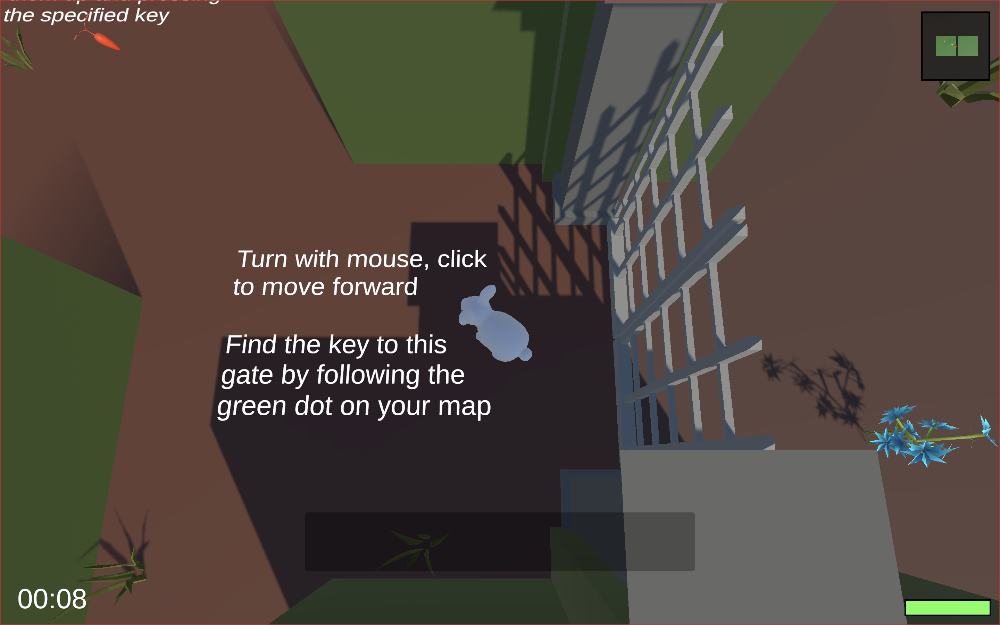
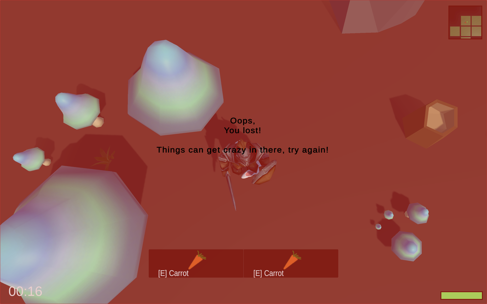
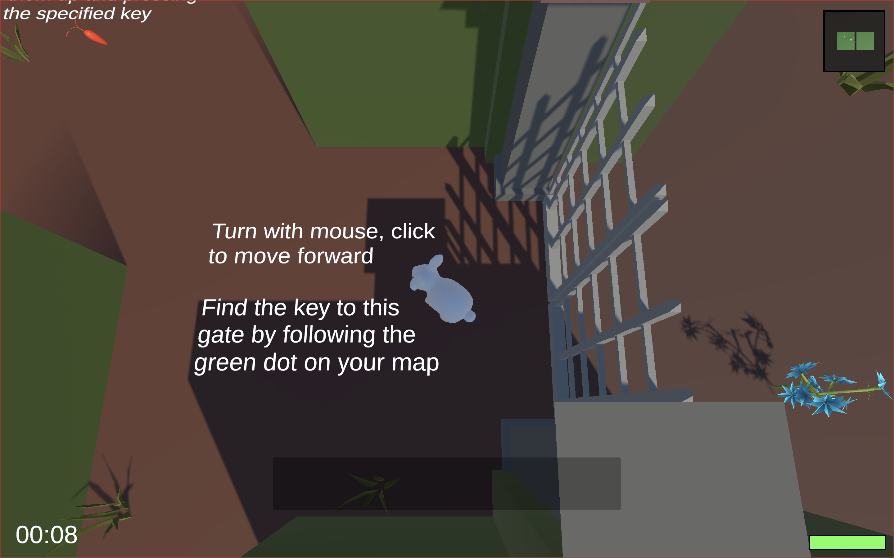
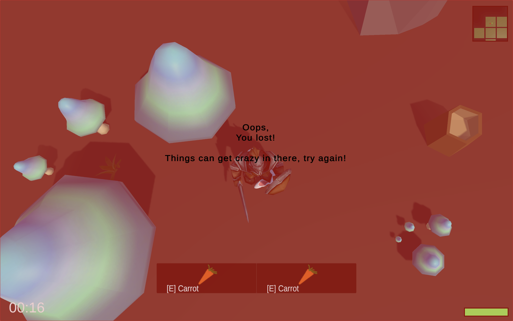

Explanation
Rabbit In The Maze is a Unity game developed collaboratively. In this game, players control a rabbit trying to escape randomly generated mazes of increasing difficulty. The objective is to find the key to unlock the exit in each level. The game features progressively challenging mazes, requiring players to navigate through complex paths and avoid obstacles.
Inspiration
The inspiration for Rabbit In The Maze came from classic maze games and the desire to create an engaging, procedurally generated experience. We wanted to combine the charm of an Alice in Wonderland style game with the challenge of navigating through unpredictable environments. The idea of increasing difficulty was inspired by the concept of growth and learning, mirroring the journey of a player as they become more skilled at the game.
Reflection
Developing Rabbit In The Maze was an enriching experience that taught us valuable lessons in game design, procedural generation, and collaborative development. One of the main challenges we faced was balancing the difficulty progression to ensure the game remained challenging yet fair. This project enhanced our skills in Unity development, algorithm design for maze generation, and user experience considerations. Looking back, we're proud of creating an engaging game that offers a unique experience with each playthrough, thanks to its randomized nature.